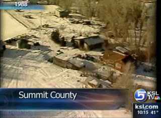

***
A brief, inadequate, and highly tendentious summary of the John Singer case.

The Singers, sans John: Vicki Singer is second from the right in the back row; below, right, the Singer farm (or, as the media put it, "compound") as it appeared in 1988.
In the village of Marion, east of Utah's celebrity-overrun Park City, can be found a 2.5-acre tract owned by the family of John Singer.
A reservoir located just south of the farm is fed by the runoff from nearby Hoyt's Peak.
Even in late summer, when the pitiless sun drives most residents of northern Utah to seek refuge in air-conditioned rooms, the pristine waters of that reservoir are bracingly cool. So it's hardly surprising that Jeff Edrington and Spencer Smith were found playing in that reservoir on a blistering day in late July 1973.
Unfortunately, neither of the young boys had told an adult where they were going. So nobody was there to help them when the raft on which they were lounging overturned, leaving them stranded in the middle of the lake. The water was easily deep enough to drown in, and the boys were too far from the shore to make it on their own.
After hearing desperate cries for help, Heidi Singer frantically sprinted home to tell her father. A few minutes later the wiry 42-year-old farmer crested a nearby hill just in time to see one of the boys lose his battle to retain buoyancy. Without breaking stride, John dove into the lake. Muscles hardened by farm work quickly carried him to the drowning child; hands strengthened by milking dairy cows grasped the boy firmly and carried him to the surface.
A few seconds later Jeff Edrington was ashore, coughing lake water from his lungs and -- despite temperatures that threatened to cross the century mark -- shivering. "Where's Spencer?" Jeff asked Heidi as her father made several more urgent attempts to find the other boy. Each dive took John a little deeper, and each time he stayed underwater a little longer, but little Spencer couldn't be found.
For nearly a half-hour John Singer kept up the search before succumbing to exhaustion. By this time, Jeff Edrington's father Val had arrived to comfort his son. With tearful gratitude Val Edrington took one of John Singer's hands in both of his and thanked him for the life of his son.
"It might as well have been two boys who drowned today if it weren't for you, John," the elder Edrington sobbed.


Five years later, the same Val Edrington who embraced John Singer and tearfully thanked him for saving the life of his son would publicly call for Singer to be murdered under the color of "law" -- for the supposed crime of protecting his own children from the state.
Just weeks before Singer rescued Edrington's son, he and his wife Vicki had removed their children from local government-run schools. The Singers were motivated primarily by religious and moral concerns; they believed that their children were threatened with both bodily and spiritual harm by a system that taught secular, collectivist principles and cultivated moral laxity.
At the time, Edrington was the superintendent of the Summit County school district. Even though homeschooling was hardly a novelty even in 1973, he was determined to compel Singer to surrender his children for state indoctrination.
When the school board met in September of that year, recall David Fleisher and David M. Freedman in Death of an American, their 1983 book about the Singer case, Edrington testified that he was reluctant "to file a complaint against the Singers in juvenile court" on account of the fact that Singer had saved his son's life.
Putting aside whatever misgivings he felt, Edrington dutifully collaborated with the school board by signing a December 6, 1973 criminal complaint alleging that John and Vickie Singer had contributed to the delinquency of three of their children "by withdrawing said minor children from school, and failing to comply with policies and standards set out for the education of said children as provided in the Utah Code."
By presuming to educate their own children as they saw fit, in their own home, the Singers were committing a crime "against the peace and dignity of the state of Utah," huffed the criminal complaint.
Perhaps, if Edrington had chosen not to sign that complaint -- if he had defended Singer as an honorable man and caring father -- Utah would have been spared what would turn into a 15-year struggle with John Singer and his family, a conflict punctuated by the needless deaths of two men, both of them fathers with children to raise. But Edrington -- like a half-dozen other officials in key positions -- believed that loyalty to the state and its positivist "laws" is the highest moral obligation.
Within that pusillanimous company, Edrington distinguished himself -- first, because of his manifest ingratitude to Singer for saving the life of his own son, and second, because of the perverse enthusiasm he would display for the use of lethal coercion against Singer for daring to defy the state.
Righteous Rebellion
By virtue of both background and character, John Singer was ill-suited for the saddle of the state. Two years after he was born in Brooklyn, Adolf Hitler came to power in Germany. His German-born father Hans, who had joined the National Socialist Party in 1923 (his party membership card was #4278), eagerly returned to the Fatherland in anticipation of the Aryan Millennium.
Upon turning ten, John was compelled to enlist in the Hitler Youth, and organization he quickly came to despise. His father -- over the objections of his wife, Charlotte -- also enrolled John and his brother Harald in an elite prep school run by the SS. Within a year and a half both John and Harald -- to their eternal credit -- were expelled from the SS-run school for insubordinate and "rebellious" behavior.
Unlike her husband, Charlotte was a devoutly religious woman, a convert to the Mormon faith, and she instilled in her children both a sense of traditional morality and a marrow-deep hatred for authoritarian conformity. This put the three of them immediately at odds not only with Hans, but also with the state-run Nazi school system, in which despotism and depravity were firmly welded together.
Parens patriae, as promoted in National Socialist Germany.

"A civil service act in 1937 required teachers to be `executors of the will of the party-supported state,' which they were to defend `without reservation,'" recall Fleischer and Freedman in Death of an American. "A local youth office could obtain a guardianship court order to take children away from families whose political or religious convictions were questionable, who befriended Jews, or who refused to enroll their children in the Hitler Youth. The youth office then placed the children in `politically reliable' homes. In addition, parents could be fined or imprisoned for withholding their children from participation in party youth activities, even those parents who merely objected that such activities were responsible for the high pregnancy rate among teenage girls."
Following the war, Charlotte and her sons and daughter Edeltraud found their way to Utah. John and Harald were drafted into the U.S. military, which reinforced their hatred of regimentation. Following his discharge, John found work as a television repairman, eventually opening his own business.
Although he was an active and faithful Mormon, John gravitated toward a controversial "fundamentalist" named Gus Weller, who believed that the LDS Church had compromised too much when it abandoned polygamy and jettisoned other controversial teachings and practices. Weller provided John with the tract of land on which he built his home and farm, and, eventually, his one-room schoolhouse. This is the same home that would later be referred to as the "Singer Compound" during conflicts with state authorities.
In September 1963, 32-year-old John married 20-year-old former homecoming queen Vicki Lemon. In order to exchange their vows the couple -- both of whom were of legal age -- had to flee to Elko, Nevada a few steps ahead of a posse organized by the bride's family, who considered the groom to be entirely unsuitable. The plan was to have John arrested for kidnapping, and Vicki forcibly committed to a mental hospital in Provo. The couple managed to elude the dragnet long enough to be married, and things settled down after they settled in on their homestead near Marion, Utah.
The chief reason Vicki's parents objected to the marriage was John's reputation as an "apostate." His was the hand always raised in Sunday School to challenge the prepackaged certitudes offered by the instructor.
It wasn't that Singer was an unbeliever; it was that he believed too strongly in the pure, uncut Mormonism of the pre-1890 vintage, rather than what he considered to be an inferior, attenuated version being preached by his contemporaries. (In 1978, Singer became a polygamist, taking Shirley Black as a "plural wife.")

Singer was constantly rebuked by co-religionists who often recited the familiar admonition, "When our leaders speak, the thinking has been done." Not surprisingly, given his formative experiences in Nazi Germany, Singer found that line of thought unpersuasive, and he once "had the audacity to compare the mentality of those church members who blindly follow their leaders to the obedience of the German people to Hitler during World War II," observe Fleischer and Freedman.
In 1972, John and Vicki's theological views led to their excommunication from the LDS Church. Sitting in the Church Court that handed down that sentence were the principal of the local school and several other officials who would later seek to imprison John and Vicki for "child neglect" and "contempt of court." And their status as "apostates" made it difficult to earn a living, or maintain reliable friendships: "On their shopping trips to Kamas," write Fleischman and Freedman, "John and Vicki would encounter burning stares of rage and hate from the people."
"Pressing the issue"
In February 1978, five years after Singer had begun to educate his children at home, Edrington met with a Summit County citizen's group formed to advise the school board. The protracted struggle between the Singer family and the state of Utah dominated the meeting. When one participant chided the board for pursuing the matter too zealously, Edrington replied that he intended to "press the matter to the very ultimate."
"John Singer has broken the law," declared Edrington, no doubt with Pharisaical piety oozing from every syllable, "and if pressing the issue means that John Singer will be killed, then that's the way it will be."
Keep in mind that Edrington was not referring to someone who had committed a capital crime, or any offense against persons or property. John Singer wasn't a fugitive from justice. He hadn't so much as left a parking ticket unpaid, or failed to return a book to the local public library. Singer's initial "crime" was to educate his own children in his own home, at his own expense.
But by the time Edrington publicly approved of the idea of killing John Singer, the real issue was no longer the rights of Singer or his children, but rather the injury Singer's defiance had done to the institutional vanity of Utah's judicial system.
Pursuant to an agreement extorted from them by the state, the Singers permitted their four oldest children to be tested by school district officials in October 1974 and April 1975. They also agreed to follow a homeschooling plan approved by the district. In exchange they were granted a "certificate of exemption," which was essentially a scrap of paper polluted with boilerplate language certifying that they would be permitted the "privilege" of teaching their own children.
After the Singers informed the school district that they would countenance no further interference in the upbringing of their children, they were once again accused of "criminal neglect" toward their offspring.
So acute was that "neglect" that the Singers were spending hours each day teaching those children in a schoolhouse they constructed, using books, projectors, and other equipment they had purchased at their own expense.
The pitiable Singer children were given personalized instruction by the most motivated teachers whenever any of them had difficulty with an assignment. With damnable indifference to the well-being of their heirs, the Singers taught them the value of rigorous, honest work under the open sky, imparting to them an ethic of self-reliance while the inmates of the collectivist hive were being raised as dutiful conformists and consumers.
For deflecting several efforts by the school system to seize control of his home school program, Singer had been cited for "contempt of court" -- that all-encompassing non-offense that occurs anytime somebody fails to treat a pathologically vain cross-dresser with a gavel like an vacationing Olympian deity.
Writing with reference to a familiar tactic, Joel Skousen points out: "Notice, that if you ever resist bureaucratic 'law,' you are not prosecuted for resisting an inane and unconstitutional law, but for `defying the court' or `resisting arrest.' Separating the act of resistance from the initial law which motivated the act is one of the slickest ways to bring a populace into line with bureaucratic law."
Who's the real "abuser"?
In 1978, while the State of Utah was devising plans to arrest and prosecute the Singers, Daniel Kingsley, a professor at the University of Utah, visited the Singer home school along with his wife Lynn, a licensed social worker. They had little in common philosophically or theologically with the Singers. Yet a decade earlier they had withdrawn their own children from government-run schools and educated them, along with neighbor kids, in the basement of their own home in Salt Lake City. Eventually their home school grew into a full-time private academy -- the Kingsley School -- with an enrollment of 350.
"I've never heard of any parents in Utah being hassled as badly as the Singers over this compulsory attendance issue," Lynn Kingsley remarked to a state legislator. Unlike the Singers, the Kingsleys -- most likely because of the husband's academic credentials and the wife's role as a licensed social worker -- were regarded as citizens in good standing, despite the fact that they had defied the same "compulsory attendance" law.
Judge John Farr Larson, who was in charge of the Singer case by this time, was familiar with the Kingsleys' private school and had expressed approval of it. He permitted the Kingsleys to visit the Singer home and report their findings.
"I could see that the education the Singer children are getting is not the same as they would get in public schools," Lynn Kingsley testified later. "But in some ways their education is superior.... Not one of them will ever be welfare cases when they grow up. They are learning responsibility.... I would love to have the children in my school visit that farm and learn some of the things Mr. Singer teaches his kids."
"It is a marvelous method to sit around the table with children, on a small-group basis, with a very individualized approach, and this is what the Singers do in their home school," continued Mrs. Kingsley. "To put the children back in public school at this time would be like leading lambs to slaughter."
Ah, but what about "socialization," the cardinal virtue of goverment education and its all-sufficient justification?
"The last thing the Singer children need to worry about is being social," Lynn observed. "They have more friends and relatives up there to play with than almost any group of kids I've ever known.... I wish that all of the children that come ot my school looked and acted and behaved as courteously as the Singer children. I felt very much that these children have been taught some social graces."
Judge Larson's reaction to this testimony was to order the Singers to collaborate with the Kingsleys "to establish a private school that ... meets the educational stadards of the state." He also ordered Singer to submit to arrest on contempt charges. John and Vicki were smart enough to recognize that there was a loaded gun hidden inside the bouquet offered by Larson, and refused to comply. Singer made it known that he would resist, by armed force, any effort to take him into state custody.
This prompted yet another escalation by the State of Utah in its jihad against the Singers.
In October 1978, four police officers disguised as a television reporter and camera crew ambushed Singer on his property and attempted to kidnap him. Like most of the tax-fattened specimens who follow that profession, Singer's would-be abductors were in terrible shape and thus no match for the sinewy middle-aged farmer.
After wrenching himself free, Singer pulled a thirty-eight from his waistband and ordered the thugs from his property. "Get off me, or I'll kill you!" Singer commanded. By this time Vicki and the Singer children had arrived.
Mrs. Singer caught Robert Wadman, the ringleader, by the tie, shoved a fist in his face, and informed him that she was about to "knock [his] teeth out." Several of the Singer children, propelled by righteous fury over the criminal assault on their father, launched themselves at the officers, clawing, kicking, and punching them in a frenzy of filial loyalty. Panicking and all but wetting themselves, the officers withdrew, all the while piteously pleading not to be shot.
John later confided to Vicki that his pistol wasn't loaded. Grant Larsen, one of the officers Singer fought off single-handedly, later said that the soft-spoken, mild-mannered farmer "was the toughest man I ever grabbed hold of."
As Singer's story gained national prominence, his family gained a few allies. One of them was Samuel Taylor, a Democratic state representative from Salt Lake and one of the most liberal members of the state legislature. Taylor did everything he could to persuade Judge Larson to relent.
"I have never known of any case where parents and children were as demeaned and humiliated both by the courts and by the press as in the Singer case," wrote a disgusted Rep. Taylor in a late 1978 letter to Larson. "It was the state and not the Singers who were guilty of child abuse." Taylor offered to act as a mediator between the judge and the family to prevent further violence of potential bloodshed. He suggested that the court could save face by treating John Singer's self-imposed exile on the property as a form of "home confinement," thereby obviating the perceived need to have him arrested.
Larson, however, wasn't willing to budge so much as a millimeter. In a sworn statement made during a subsequent investigation of the conflict, Judge Larson -- employing the refined, scholarly diction of his elevated calling -- referred to Taylor's efforts at mediation as "a bunch of bullshit."
Death warrant
Because he had forcibly resisted the criminal aggression of state agents, a felony bench warrant was issued for John Singer. This warrant was "legal" authorization to exercise deadly force. Armed with that license to kill, several state agencies, in cooperation with the FBI, spent the winter of 1978 devising various plans to seize Singer. Eventually a base of operations was set up at a nearby house, and snowmobiles carrying armed officers were used to keep the Singers under constant surveillance.
The plan to apprehend Singer relied on an overwhelming show of force -- "shock and awe," as it were, involving a large number of armed men. One key piece of intelligence that worked to the State's advantage dealt with Singer's well-established beliefs: It was known, as a moral certainty, that Singer would not fire the first shot.
"The key to the plan," recalled Ron Gunderson, who took part in the arrest, "was that a resonable man, when surrounded and confronted with a show of force, would submit. The problem was, John Singer was not a reasonable man."
Gunderson and nine other tax-feeders were lying in wait on the morning of January 18, 1979, when Singer was seen clearing his driveway with a snow-blower. When he spied four officers approaching him, Singer turned toward his house while reaching for his thirty-eight Colt revolver. Singer's back was turned to the assailants when he was mortally wounded by a shotgun blast.
Singer's murder appeased those running the apparatus of state coercion. Having conspired in the retalitatory murder of a dangerous political dissident, Judge Larson eventually permitted Vicki Singer to resume teaching her children as she saw fit.
"It's very ironic, to say the least ... [that] now I'm teaching my kids the same way that John and I did before he died, and I think the state knows it," Vicki commented several months after the murder. "But all they wanted to do was to show us, and show the people, that if anybody tried to come against the system, watch out because this is what can happen to you."
With the help of Gerry Spence, the Singers attempted to obtain civil redress for the murder of John. Not surprisingly, the judicial and law enforcement establishment in Utah quickly closed ranks, and the suit was quickly dismissed.
That's where matters stood until January 1988, when Addam Swapp, a vainglorious young man who marred two of Singer's daughters, set off a bomb at a local Latter-day Saint meetinghouse in what he described as a divinely ordained terrorist act intended to bring about John Singer's ressurection and the Second Coming of Christ. In the subsequent 13-day siege Swapp shot and killed a corrections officer named Fred House.
Eventually Swapp was convicted of homicide and various charges related to the bombing and sent to state prison, where he will remain until at least 2012. Vicki Singer, also arrested in the siege, was given a five-year prison sentence.
There is no justification for Swapp's terrorist act. However, to explain is not necessarily to justify. It seems reasonable to believe that the adamant refusal of Utah's "justice system" to provide redress to the Singers helped cultivate the fanaticism that sustained Swapp's deranged attempt to summon the Millennium through violence.
An "unreasonable" man
It's difficult to imagine that John Singer would have approved of Swapp's crimes. Although firmly committed to the defense of his family, even to the point of bloodshed, Singer -- whatever one thinks of his theology -- believed in and practiced the principle of non-aggression.
Singer's experiences living under the National Socialist version of the paternalistic state left him with a marrow-deep aversion to collectivism and conformity. As the product of a broken home presided over by a fanatical and abusive father, Singer came to appreciate the need for each of his children to develop as an individual, and to give them loving individual attention.

In many ways, the six-year war waged by Utah against the Singer family was the prototype for the more widely known atrocities at Ruby Ridge and Waco. Because of its roots in the subculture of Mormon fundamentalism and polygamy the Singer episode likewise foreshadowed the mass kidnapping of FLDS children by the State of Texas a year ago.
What distinguishes the Singer case from the others, however, is this: Unlike the Weavers, the Branch Davidians, or the FLDS, the Singers were being persecuted by people almost exactly like them simply because they were seen as non-conformists -- excommunicated apostates from The Church, defiantly resisting the demands of The Law.
Singer "caused [Utah's] theocratic power structure to rock and reel with national publicity that focused on the way this simply Mormon excommunicant was being treated by the Mormon moral majority," declared Gerry Spence, who represented Vicki Singer in her short-lived lawsuit against the State. The Singer family's stand had revealed the state's power structure to be "unreasonable, incompetent, unjust, and immoral. And the power structure would not tolerate it."

Accordingly, the state's enforcement apparatus, on the pretext of looking after the best interests of the Singer children, finally "subdued and conquered this renegade Mormon" by arranging to have him shot in the back.
Today, parents throughout Utah are free to school their children at home without dealing with many of the impedimentia (such as standardized testing, home inspections, or review of detailed educational records) that were thrown in the path of the Singer family by a vile and vindictive state government.
Judge Larson, who signed John Singer's death warrant, died and went to hell in 1994. His departure inspiring nauseating eulogies from the Deseret News -- Utah's largest and most reprehensible newspaper -- for being a "devoted family man" and "outstanding citizen."
As far as I can tell, Val Edrington still labors in the educational establishment, and continues to find new ways to spread needless misery. The odds are good that his son Jeff -- who would be around my age -- is still alive with a family of his own. I wonder, but not for long, if Val has told his grandchildren that he helped kill the man who saved their daddy's life.

Available now!
Dum spiro, pugno!
55 comments:
Mr. Grigg,
Another very good essay. I had never heard of this case, but then again I was not alive at the time any of it took place. The only good thing I have to say about it is that I am glad more people did not die at the hands of the police. The state sanctioned murderers obviously refined their killing capabilities by the time Vicki Weaver and her son were murdered and of course all of the needless deaths at Waco. If I may make one point, or ask a question: If it was a pocket .38, then it was a .38 special, and therefore would have to be a revolver and not an "automatic." Then again, I could have read it wrong, and it could be a .38 super, in which case it would be an auto. Not trying to nitpick though. Thank you for your wonderful writing.
Josh
Josh, thanks for your generous words and your very timely "nitpick."
The .38 was a revolver, not an "automatic"; I had flagged this for correction before posting the essay, but neglected to tidy this up before publication.
Thanks again, and PLEASE feel free to nitpick when there are nits that deserve picking!
Dear Sir,
I deeply appreciate your commitment to liberty here in this land where it was born. Your commitment to the values and ideals that make this nation great is very refreshing.
Having read your latest piece "The Ballad of John Singer," I felt a compulsion to make an admittedly brazen request of you.
I beseech you to investigate and perhaps write something about the "most dangerous radio host in America," William Cooper. This man was a great patriot. He was, I believe, greatly misunderstood and is far too often maligned in the byways of cyberspace by a great many loathsome detractors, including the same detestable scraps of humanity who, to their great shame, so love to don the garb of patriotism, but are in reality nothing more than a miserable pack of hypocrites and liars.
William Cooper's life story is a fascinating one, and his death was a terrible loss for our country.
I am writing this here because there was no contact information for you on your webpage.
Thank you.
William Cooper Biography
http://web.archive.org/web/20010203140200/williamcooper.com/william.htm
The Legacy of William Cooper, Part 1 of 10
http://www.youtube.com/watch?v=GB3xA3q6rCM
Cooper Family Targeted By Feds
http://web.archive.org/web/20010208233610/williamcooper.com/targeted.htm
Public Judicial Notice 1
http://web.archive.org/web/20010208233212/williamcooper.com/pubnote.htm
Public Judicial Notice 2
http://web.archive.org/web/20010208233141/williamcooper.com/pubnot2.htm
Public Judicial Notice 3
http://web.archive.org/web/20010208233630/williamcooper.com/pubnot3.htm
Well, I see the links got chopped off. I don't mean to clutter up your comment area, but here they are again (some assembly required). Other readers might like to learn more about this tale of resistance of tyranny.
Libertas an Mors Mortis.
William Cooper Biography
http://web.archive.org/web/20010203140200/
williamcooper.com/william.htm
The Legacy of William Cooper, Part 1 of 10
http://www.youtube.com/watch?v=GB3xA3q6rCM
Cooper Family Targeted By Feds
http://web.archive.org/web/20010208233610/
williamcooper.com/targeted.htm
Public Judicial Notice 1
http://web.archive.org/web/20010208233212/
williamcooper.com/pubnote.htm
Public Judicial Notice 2
http://web.archive.org/web/20010208233141/
williamcooper.com/pubnot2.htm
Public Judicial Notice 3
http://web.archive.org/web/20010208233630/
williamcooper.com/pubnot3.htm
Another fascinating, informative, and predictably infuriating essay from the master.
I have to point out, incidentally, that this story is a perfect example of why one should always be armed. Being armed means you never put the gun down. Don't carry a gun in a backpack, or leave it sitting around in a drawer--wear it in a holster!
Considering the consistently craven behavior exhibited by the enforcement arm of the organized criminals eating out our substance, I feel justified in submitting that John Singer just might be alive today if he had been armed on January 18, 1979.
While I recall news coverage of the Swapp incident in '88, I was unfamiliar with the Singer case before reading this post (let me guess - the MSM at the time was "otherwise engaged" as usual). If any long-term good resulted from John Singer's murder at the hands of the State's armed thugs, it is that many more of us have become aware of its depredations in the ensuing three decades and are ready, willing, and able to confront them head-on. For this reason I seriously doubt that the Utah State Gestapo would get away with a repeat of Singer's murder today without a significant number of its own mercenaries suffering lethal consequences.
I wonder, but not for long, if Val has told his grandchildren that he helped kill the man who saved their daddy's life.
I'm sure if he has told his grandkids anything at all about his role in the Singer murder, it has been heavily spun to make Grandpa look like a self-sacrificing "public servant" battling the forces of pagan, anti-American evil, and the facts doused in a heavy layer of statist bovine excrement artificially flavored as truth. It's equally likely, though we can only hope it turns out otherwise, that the Edrington children and grandchildren have swallowed this toxic load whole and have since replicated their father's/grandfather's lawless, tyrannical attitudes toward those around them not enamored of conforming with the rest of the herd. History teaches us that statism has powerful hereditary tendencies.
The state is indeed a roaring lion seeking to devour those who refuse to feed it with the God-given liberties we all possess at birth.
It is interesting to note your use of the phrase "pharisaical piety" to describe Edrington's despicable demeanor. Throughout the Bible, God engaged and saved many people and societies that had atrocious belief systems (e.g. the Assyrians); however, it is interesting to note the distance He kept from the Pharisees and His use of them as examples not to follow. No doubt Edrington would have been comfortable sitting on the Sanhedrin council that decided to murder an innocent Man for the sake of "collective unity."
I wish that just once, that someone who stood up for his rights (whether it be homeschooling) or for an action that did not violate the will and rights of another person (polygamy)wasn't involved in racist B.S.
Honestly, I wish they weren't involved in polygamy or any other immoral (though not necessarily criminal behavior) either.
And I damn sure wish that they or their nutjob relatives wouldn't commit terrorist acts in retribution.
It's all very well that the thugs tried to kill him over homeschooling/polygamy. It raised the ire of many, which is good. But it would be far better for the cause of liberty on the whole if such murdered men were not doing anything immoral whatsoever. A martyr is only good as good as he is innocent. And even if the victim is immoral (though not truly criminal,) it nevertheless casts aspersions primarily on the victim, not the badgethugs.
So remember, folks. If you've got to get your head staved in by thugs, and even if your cause is just, don't be a racist/polygamist nutter at the same time, eh what?
-Sans Authoritas
Anonymous @1:23,
If John Singer had successfully defended himself from the badgethugs, he would only have been able to do so precisely once. Because in a matter of hours, those cowards' comrades would have swooped in with all the firepower they could muster. Then they would kill him solely because he wanted to have two wives and have racist ideas. Oh, sure, his murderers would couch their actions in words such as "Law and order, and the common good" and other such legally positivistic nonsense. The bottom line is that they would kill him not because he actually posed a threat to anyone, but solely because he would not submit to the will of others.
Positivistic law-worshippers hate people who recognize the actual purpose of law. They believe (though they may say otherwise) that a law doesn't exist to protect other people from acts of aggression or fraud. No, no. A law exists for its own sake. If you violate the most nonsensical, asinine regulation imaginable, and some thug knocks your door down, shoots your dogs and brandishes a submachine gun at your children, they will say, "You had it coming, because you broke the law. And the law is the law."
Hmm. "The law is the law..." it reminds me of another verbal redundancy having to do with ontology: "I am who am."
Law exists not for its own sake, but to serve as a means of protecting from and remunerating after an unjustly-inflicted injury.
The only thing that actually exists for its own sake is God. Some people worship God. Others worship the law. God is who he is. Law merely exists for the sole purpose of helping protect God's creatures from real violations of the life and property rights of others.
-Sans Authoritas
Will, this was a truly heartbreaking story which I never heard before. Thank you.
The best Americans - John Singer, John F. Kennedy, Martin Luther King, Jr, Robert Kennedy, not to mention hundreds of others of like devotion to freedom - always end up murdered by the State.
But the way the State gets away with murder is by the compliance of the shit-assed sheep:
"Sitting in the Church Court that handed down that sentence were the principal of the local school and several other officials who would later seek to imprison John and Vicki for "child neglect" and "contempt of court." And their status as "apostates" made it difficult to earn a living, or maintain reliable friendships: "On their shopping trips to Kamas," write Fleischman and Freedman, "John and Vicki would encounter burning stares of rage and hate from the people."
It was not one shotgun blast in the back that killed John Singer. It was a lynch mob of upstanding and self-satisfied "citizens," exemplified by Val Edrington. They cannot even permit another person to withdraw from their company and mind his own business - they have to go after him and try to compel him to join their mindless bleating flock.
No wonder the rapacious power elite everywhere in the world are so contemptuous of the perspiring masses, and will coldly send countless millions of us to fight and murder each other in "wars," and to murder non-conformist individuals like John Singer in times of "peace."
One can appreciate the arrogance of the power brokers - do sheep like us even deserve freedom? Do we deserve not to be fiscally sheared of our wool every spring?** Do we even deserve not to become mutton on the dinner tables of the rulers, and have our offspring turned into lamb chops garnished with parsley and mint jelly?
**(Interesting that the day chosen for tax day, April 15, is also sheep-shearing season. Too funny.)
There is little one can say about such a story, except that our human species has a lot of evolving still to do.
Sincerely,
Lemuel Gulliver.
PS: There is no statute of limitations on murder. Who fired that shotgun into Singer's back? Can he not be charged even today with murder, if he is still alive? (Unless of course it was a timorous policeman - they inevitably have the prime excuse of "they feared for their safety.") Does anyone know who it was?
Who fired that shotgun into Singer's back? Can he not be charged even today with murder, if he is still alive? (Unless of course it was a timorous policeman - they inevitably have the prime excuse of "they feared for their safety.") Does anyone know who it was?
As has degenerated into standard practice nationwide, the identity of this copscum trigger man is probably a closely guarded state secret. For all of their bully posturing, these cretins are in fact cowards who are quickly exposed as such whenever they have to face angry citizens without that state-issued codpiece (a gun) to hold as a security blanket. Indeed, over at the Copwatch.net forums a great number of them have openly admitted that their greatest concern is their own safety, that they treat ALL citizens as "the enemy", and that they NEVER, EVER leave home without their steel teddy bears at their sides.
Oh, and as far as John Singer's assassin being charged, tried, and convicted of murder is concerned, I think it goes pretty much without saying that there's a greater chance of the Earth suddenly reversing its rotational direction tonight and of the sun rising in the West tomorrow morning.
Not that guarded. Here's a court document.
http://bulk.resource.org/courts.gov
/c/F2/745/745.F2d.606.82-2273.83-1501.html
Excellent, Will.
I've just linked your article to my new blog, PureMormonism.blogspot.com.
As you may recall, you've been a major influence of mine since I first read "Pensees of a Puzzled Pilgrim" way back when. Let's hope my readers become regular readers of yours.
Rock Waterman
Sans Authoritas, 2:32:
You're correct, of course, but the way I see it, the key with government thugs is:
1) Practice maneuver warfare, not attrition warfare. (In some parts of the country, you only need to buy a few minutes in order to slip off into the woods and vanish indefinitely.)
2) Show defiance, no matter what.
Just a few cases of people showing armed defiance, be it a hopeless last stand or an ambush of a SWAT team, could very well eventually suffice to implement Solzhenitsyn's advice*. If we're going to suffer a reign of terror under the iron fist of a militarized police force, we should at least make them feel the urge to take out life insurance policies.
* And how we burned in the camps later, thinking: What would things have been like if every Security operative, when he went out at night to make an arrest, had been uncertain whether he would return alive and had to say goodbye to his family? Or if, during periods of mass arrests, as for example in Leningrad, when they arrested a quarter of the entire city, people had not simply sat there in their lairs, paling in terror at every bang of the downstairs door and at every step on the staircase, but had understood they had nothing left to lose and had boldly set up in the downstairs hall an ambush of half a dozen people with axes, hammers, pokers, or whatever else was at hand. The Organs would very quickly have suffered a shortage of officers and transport and, notwithstanding all of Stalin’s thirst; the cursed machine would have ground to a halt!
–Alexander Solzhenitsyn
Now this man, John Singer, was a man I can admire. His independent spirit is what I like the most about the man. Never mind his theology, he nevertheless preferred God-given liberty over state-approved license. I noticed one calling the man a "racist" because he preferred to utilize his God-given liberty to associate with his own race, NOT conform with the state-approved license of mingling with other groups of folk, whether a different RACE, RELIGION, or what the hell ever. It shouldn't matter! It's his own preference. Freedom of association is, after freedom to be armed, the most significant of them all, IMO. All the other freedoms can be wrapped up in that one.
Does anyone really think that the races, any of them, don't prefer to mingle and associate with their own kind? Please don't play stupid. Most folk that make the loudest noise about "racism" (usually against blacks) usually hale from a place largely devoid of the race in question (again, usually blacks) or with a token presence and don't work with and among them. But, surprise! (NOT!) they sure have a LOT to say about one who has lived in communities as a minority among "minorities" and worked in places as a minority among the "minority."
Ergo, Will, I also hate conformity simply for the sake of "unity," "peace," and/or some kind of state-approved license, in contradiction to God-given liberty.
Of course, 90% of the statist folk, whose stock and trade is establishing conformity, are in the business of stomping on God-given liberty, to be replaced with state-approved license in the first place.
Yes, there's a distinction, dammit.
It has always been difficult for me to be a "team player" unless the "thing" supposedly requiring said team is totally devoid of philosophical, religious, ideological obstacles, i.e. a software project, construction project, etc.
In practicality, however, that's not usually the case so I prefer to work alone or with one or two other folk.
For those who take the time to honestly look at what the amerikan gov't actually is rather than at the propaganda we are continually fed, the dichotomy is overwhelmingly clear. This is a Hegelian compromise socialist/fascist state, we haven't known true liberty in this country for generations. We are little more than a 'managed herd' of humanity.
Thus always with tyrants . . .
I find your choice of juxtaposition of the intolerant mormon culture (which I grew up with and live in the midst of) and the intolerant demands of the state interesting though - as I've always said, gov't is the bastard step-child of religion. Both are hierarchical social structures with coercive desires - it is just that the latter exert more overt means than the former. As you've described in this case though, the overlap is worthy of mention.
Regardless of their beliefs, people simply should not be treated in such a manner.
Sic Semper Tyrannis
Did it come out which officer shot him in the back? If I were Mr. Singer's son, I'd be interested in that information.
Will,
My 7th birthday was on January 18, 1979, so I have only a very vague recollection of the assault on the Singer "compound" that day.
I do, however, vividly recall the 1988 standoff (I was 16 at the time). Interestingly, I also recall a comment my mother made at the time, which was simply, "This all started because John Singer simply wanted to educate his kids at home".
That statement has remained with me for the last 21 years - all he really wanted to do was to exercise control over the education of his children.
Amazing how in a so-called "free country" a father's choice resulted in his untimely and tragic death.
(by way of clarification, I am a native Utahn and a member of the LDS Church. With that said, I have grown increasingly weary of the disturbing growth of Utah state government, and at the same time, the coziness the LDS Church has with that government.)
Great article, Will. I look forward to each of your posts.
Best wishes.
Dixiedog,
You said: "Please don't play stupid."
Thank you, brother. Hypocrisy is the most infuriating and vile of all the multitude of sins. The Master said: "I come to call the sinners, not the righteous, to repentance." Righteous hypocrites are beyond hope and the possibility of redemption.
You are right too, about Singer's "racism." If a man is prejudiced, or has any other opinion you disagree with, you won't change his mind by force of law or with bullets. Only by sitting down with him and discussing it with mutual respect will you - maybe - change his mind. OR, he might change yours. (That possibility is probably why hypocrites never want to discuss their alleged beliefs, but prefer to kill those they disagree with.)
A couple of observations about this question of polygamy, since Will lives in Utah and it so often comes up in his blogs: If the women are of mature age to make an informed choice, and do so freely, that should be their privelige and right. As for the children, I have never read or heard of any study that found they were adversely affected. In fact, usually the opposite - the extra adults around to help raise them usually is beneficial to their mental and physical well-being.
Singer's beautiful kids in the video certainly looked happy, well-fed, clean and neatly dressed. And their academic level was found to equal those in state schools. All they were missing was the sheep mentality.
Second, if any "family" chose to live as a loose hippie group of free associations, rampant sex, and unemployed alcoholism, without calling themselves "married," (implying a deeper spiritual commitment before God,) you realize of course the licentious and depraved "authorities" would have no objections to such an arrangement? Millions of people live that way in this sick country, fathering multiple neglected kids with multiple women, and no police thugs come knocking on the door. What drives the prissy little tin gods in statehouses, and the drag queens behind the bench, nuts, is the claim to be formally married without their permission. Without that claim, they couldn't care less.
These leeches suck greedily at the iron tits of the Goddess of Hypocrisy. The sour milk of human malice is their sustenance and lifeblood. May their last living thought be gibbering terror, as Satan comes with bony fingers and searing breath to clasp them to his bosom for all eternity.
Sincerely,
Lemuel Gulliver.
PS: Thanks to those who posted the link to the Singer court papers. Why should Vicki Singer have had to be the one to file a civil case against the murderer of her husband and his accomplices? Of course, the suit was dismissed, and the link shows her appeal against that was dismissed also. If anyone ever doubted that there is no such thing as equality before the "law" in "Amerika," this should put those doubts to rest.
I fear the wrath of God that will someday fall upon us.
Today's NY Times describes a highly unusual event -- a special prosecutor being appointed to investigate possible misconduct by six other federal prosecutors. The misconduct consisted of withholding material evidence from the defense in the trial of former Senator Ted Stevens.
http://www.nytimes.com/2009/04/08/us/politics/08stevens.html?hpw
One could easily infer that Stevens indeed took bribes from a wealthy constituent. However, in their zeal to 'get' Stevens, federal prosecutors evidently suborned perjury from their star witness. Prosecutors' notes showed that the witness had told a different story to them than he did on the stand.
As a result, Stevens managed to overturn his conviction on seven felony counts -- a highly unusual event within the context of the efficient federal conviction machine.
While it's gratifying to see prosecutors held to the same standards of conduct as everyone else, one thing troubles me. Could an ordinary citizen expect similar sanctions against prosecutorial misbehavior? Dozens of people have been released from long prison sentences based on new reviews of DNA evidence, after being framed by prosecutors with perjured testimony. Where are the special prosecutors investgating these cases?
Despite its occasional, surprising lurch into a facsimile of justice, the system remains a ruthless steamroller for 'little people' lacking high-level friends in the Amerikan nomenklatura. As Hayek pointed out, socialism is inherently elitist.
Few realized that Bush was talking about class and privilege when he asserted that 'if you're not with us, you're against us.' Unfortunately, membership in Skull & Bones, the CFR, and so forth is by invitation only. Your papers, please.
Zach 847:
John Singer was shot and killed by law enforcement officer Louis Jolley on January 18, 1979. goto http://bulk.resource.org/courts.gov/c/F2/745/745.F2d.606.82-2273.83-1501.html which Sans Authoritas 413 posted.
Pay attention, Zach!
mongol Doc Ellis 124
My family visited the Singers back around 1986. I'm multi-racial, my mother being black and my father being white. It's been quite some time since then, and at that time I was only about 12 years old...... but I can remember parts of our visit. I don't recall them having any problem about being friends with other races. I can remember playing with two of the boys who were mechanically inclined at a very young age - we played around on 3-wheelers they had either repaired or built from parts.... one of the machines had weak brakes, and the boy riding it accidentally crashed into the back of the one I was riding ( at their offer ). He hurt an arm......
I may have a problem completely remembering everything about our visit, but I DO remember this much: THey were nice folks.
Today's NY Times describes a highly unusual event -- a special prosecutor being appointed to investigate possible misconduct by six other federal prosecutors.
Not meaning to stray off topic, but this simply demands comment.
I immediately smell a rat here and propose that this is nothing more than a public relations ploy by the [In]Justice Department. Indeed, the entire "special prosecutor" game is a farce. Why? Because this is a case of an organ of a body "investigating" another organ of the same body. Such incestuous activity clearly is NOT an "independent" investigation and reeks of obvious conflict of interest. For all practical purposes, this is the [In]Justice Department investigating itself, with the expectation that it will find itself guilty of misconduct and apply punishment to itself.
Only the terminally naive would take such a farce seriously. If the government were truly interested in conducting an "independent" investigation of itself, it would do the following:
1. Randomly select and hire a private law firm somewhere in the nation with absolutely no connections to anyone inside the Rome-on-the-Potomac Beltway or the federal government at all to conduct the investigation.
2. Publicly ORDER all parties to cooperate with the investigators, including the turning over of ANY AND ALL requested artifacts relevent to the investigation, WITHOUT DELAY.
3. Prescribe specific sanctions and punishments to all parties for attempted obstruction of/failure to cooperate with the investigation.
4. Ensure that all findings of the investigation be made immediately and fully public, unless certain information of a proprietary or sensitive nature (or information involving attorney-client privilege) is involved, in which case the determination of the information meeting such criteria is to be made by an independent third party.
These four steps, or something similar, should be applied to ANY investigation of ANY agency of government accused of misconduct. That would include the State of Utah's hired guns who killed John Singer in this thread.
Brilliant essay, Mr. Grigg. '"...contempt of court" -- that all-encompassing non-offense that occurs anytime somebody fails to treat a pathologically vain cross-dresser with a gavel like an vacationing Olympian deity.' is precisely brewed vitriol worthy of Mencken. I must comment on the allegations by several posters that one of Singer's motivations for isolating his family was racism. I see absolutely nothing in the article to indicate this. If those posters are inferring this from the fact that John Singer's father forced him into Nazi indoctrination programs (from which he was ultimately expelled), they may want to try to read more attentively. For all John Singer's positive character traits, he also serves as a negative object lesson on one point - carrying an unloaded firearm is sheer stupidity. Far better to go unarmed.
-BoiledInEloi
Brilliant essay, Mr. Grigg. '"...contempt of court" -- that all-encompassing non-offense that occurs anytime somebody fails to treat a pathologically vain cross-dresser with a gavel like an vacationing Olympian deity.' is precisely brewed vitriol worthy of Mencken. I must comment on the allegations by several posters that one of Singer's motivations for isolating his family was racism. I see absolutely nothing in the article to indicate this. If those posters are inferring this from the fact that John Singer's father forced him into Nazi indoctrination programs (from which he was ultimately expelled), they may want to try to read more attentively. For all John Singer's positive character traits, he also serves as a negative object lesson on one point - carrying an unloaded firearm is sheer stupidity. Far better to go unarmed.
-BoiledInEloi
I remember the Singer case and the Swapp case and the Gordon Kahl case and Ruby Ridge and Waco and dozens more! Land of the free, home of the brave my ass!
I've read through the post and the comments twice and found no reference to race or racism before Sans Authoritas brought it up. As far as I can tell, racism, which is not (yet) a capital offense had nothing to do with the whole affair, but was introduced by SA to buttress his otherwise weak opinion that only pure and moral people should be shot in the back and murdered with impunity, or did I misunderstand his argument?
Racketmensch,
Aye, you entirely misunderstand my argument. You should probably read it again.
Simply believing in racist ideas does not justify initiating aggression against anyone. It certainly does not justify murdering the man.
The man believed that blacks and whites should not associate, not simply "men are free to associate with whomever they want." The latter is absolutely fine. The former is pure racism.
I have nothing wrong with people who want to associate with whomsoever they choose. I completely agree that top-down forced "unity" is nonsense and wrong. It is undeniably racist, however, to say that races should not mingle solely because of their difference of race.
This latter view may be a Mormon view, but it is certainly not a Christian view.
I disagree with a lot of cultural aspects of all different races, white, black and hispanic. Every one of these cultures has their own particular serious problems. But these cultural issues do not have their basis in melanin or genetic makeup. They have to do with culture, or a lack thereof.
In a nutshell, if you say to someone, "I refuse to associate with you because you are white/hispanic/black," you are a racist. If you say to someone, "I refuse to associate with you because you are a thug who happens to be white/hispanic/black, that's entirely acceptable." Thugs come in all colors.
-Sans Authoritas
Racketmensch, watch the videos. They explain why they took their children out of public school. The reason was bigotry.
-Sans Authoritas
racketmensch, you must not have watched the video in the very beginning.
Hi Will,
And a particularly interesting scenario because LDS persons view the U.S. Constitution as almost inspired. Whatever the govt does is good. For some gruesome stories, review the period when atmospheric nuclear testing was sending fallout over onto Utah soil. Lives were needlessly lost, because the govt did not have the same benign view of the citizens that felt the consequences. Lesson: It always comes down to the agents of government, and they are not benign.
Nellie Lake said . . .
"LDS persons view the U.S. Constitution as almost inspired. Whatever the govt does is good."
Not hardly . . .
The LDS church, like most religious organizations, is highly opportunistic when it comes to power structures. One need only recall the rapidity which their leader had a divine revelation when their tax exempt status became threatened because of their racist policies.
Religion has always cultivated power and gov't has become the tool of choice for executing 'wet work' the church would prefer to keep a plausible distance from for at least the last century or so.
The problem (for them and the rest of us as well) is gov't grew beyond the control of religious institutions which were the hidden hand and has pretty much gone feral.
Before that there were inquisitions, witch burnings and, at least warranting honorable mention, the LDS own massacre of the Francher-Baker party in the Mountain Meadows (though they've actively denied it for 150 years).
A policy that has always served me well is that if a preacher or politician pats you on the back - you better check your wallet. Not that there aren't honorable religious people, they are just the exception and not the rule.
Sic Semper Tyrannis
I realize it wasn't the topic of the story, but I'm still surprised not even one person has made a single mention of Bill Cooper.
That's pretty disappointing.
Well anonymous,
One short reply. I was not suggesting that every LDS person is equally virtuous or the reverse. I was only pointing out that--in spite of their treatment by the state--they trust it. Remember, the fellow that was shot in the back was not on the contemporary plan. In spite of his polygamy, he was obviously the good guy.
In any case, stop in to Temple Square in SLC and check out the cement-inscibed inscription along the eastern wall. Or if its quicker, check the sampling of quotes here:
http://lds.org/ldsorg/v/index.jsp?vgnextoid=024644f8f206c010VgnVCM1000004d82620aRCRD&locale=0&sourceId=1e705930f289b010VgnVCM1000004d82620a____&hideNav=1
Unfortunately, trust in the Constitution is misplaced. At the end of the day, someone on the local end of the chain coerces. Such is always the end where the state is involved.
I must take issue with the assertion that LDS church members "trust the state". Sheep trust the state. And I would think sheep are found in equal proportions among all religions here in the United States. Trust me when I say that the LDS church has many sheepdogs among its membership. Sheepdogs who do not trust the state and are prepared to take such actions as are necessary to preserve their lives and freedoms. Nothing disgusts me more than a fellow Mormon who lives his life as a lamb waiting to be lead to the butchers. For those of you who also consider yourselves to be sheepdogs, many Mormons stand beside you with weapons oiled and mags stuffed.
jk
Si vis pacem, para bellum
Well done!
The one thing that the sheep never seem to get a grasp of is, the state has no rights. A person can not commit a crime against the state alone where there are no victims and no one was cheated. Maybe better said is the state has no personal rights over the rights of the citizens.
I remember this case from the time and clearly remember the spin job the media was doing to slander the Singer's as backwards mountain hillbillies who were destroying their children's chances at life.
One more for anonymous,
Of course there are LDS who do not trust the state. And I hope there are more and more. Actually, they are truer to the earlier Mormonism (regardless of its other characteristics). The fact remains, however, that there is a very substantial bias in contemporary mainstream LDS thought that is very pro state, or at least, pro USA state.
Apologies to Sans Authoritas and Pat H; I did not watch the videos. (I prefer text because I can scan it before I read it, and easily move back and forth for clarification). That said, I'm hyper-sensitive about allegations of someone's mental or moral failings having any bearing on criminal activity. I'm not a very good Christian, but even I know that only God can judge a man for what's in his mind.
On the subject of the Singers' racial views, it's important to point out that racial separatism is not necessarily the same thing as white supremacism.
The Singers did object to the textbook depiction of Martin Luther King, Jr. as a hero akin to George Washington. That was, and remains, a common sentiment in Utah.
As Fleischer and Freedman point out (pg. 8), that was a peripheral complaint at the time the Singers withdrew their children from school; their most vigorous protests dealt with the teaching of evolution and "immoral behavior in the schools," the latter of which was "the most important issue" to them.
The perception that the Singers were hard-bitten racists can be traced back to the influence of our good friend, Val Edrington. As Fleischer and Freedman note (pg.107), on January 3, 1978, Edrington and a fellow educrat named Terry Christensen issued press releases about the Singer case. "Both releases emphasized the fact that John Singer had objected to school textbooks that had taught racial equality. This was the first time the issue of race had been brought to the public's attention; those who already saw Singer as a religious fanatic and an outlaw now held racism against him as well."
Edrington's cynical, manipulative press release was issued just weeks before he publicly endorsed the idea of killing John Singer as punishment for the "crime" of defying the educational establishment.
Ironically, at that time, Edrington -- as an active mainstream Mormon -- was required to sustain the racist doctrine that black people, as part of the lineage of Cain, could not participate in ordinances giving them access to the highest level of glory in the hereafter.
That doctrine also held that intermarriage between black and non-black individuals would result in transmitting that "curse" to the couple's children.
This was exactly the same thing believed by the Singers. It was a stupid, abhorrent, indefensible teaching. And it was dutifully accepted by many people otherwise untainted by racial prejudice of any kind. Among that number were my parents Dick and Angie Grigg, the unfathomably generous white Mormons who adopted me, raised me, and loved me without reservation. They were relieved beyond expression when the Mormon Church abandoned that doctrine in June 1978, as were countless other members of the LDS Church.
(Oddly enough, even after that doctrine was abandoned, the LDS leadership reiterated its opposition to "inter-racial" marriage and dating.)
In publicly embracing segregation, the Singers were being candid about their belief in, and application of, a doctrine they shared with mainstream Mormonism until June 1978.
There is absolutely no evidence that they regarded non-white people to be anything other than fully human; their homeschool curriculum began with a detailed study of world geography and cultures; where inmates of public schools were being fed "social studies," the Singer children were given detailed instruction about the peoples and cultures of the world (see Fl. and Fr., pg. 9).
Mr. Grigg,
I totally agree there is a huge difference between racial separatism and white supremacy. I do not, of course, like either set of ideas, and I've no doubt you feel the same.
And of course the man was painted as a racist. It's the worst thing in the world to most people. You can butcher babies in utero, torture other human beings while calling it "enhanced interrogation techniques" or "verschärfte Vernehmung" in the original guttural German, and you're considered a hero. But if you hold a racist "idea" and don't even act on it, and it's open season.
I have no doubt the man was demonized and railroaded in the extreme. My simple point was that a martyr for liberty who holds racist ideas reflects upon the rest of liberty lovers rather poorly. It allows simple-minded people to look beyond the atrocious "reason" for the murder, and say, "He had it coming, the damn racist." That is a problem for the advancement of liberty.
-Sans Authoritas
I'm a Mormon who grew up outside of Utah and have lived in Utah since attending college at BYU and, quite frankly, I hate the Utah mentality of members of the church. There are two great examples similar to this situation, even though they thankfully didn't end with murder, where two intelligent people were ostracized and railroaded by people who claim to share the same beliefs but couldn't stand the idea of non-conformism.
The first was Dr. Steven Jones. Enough said.
The second was a worker in the student organization who wrote a letter to the editor in the school paper basically calling for a reform of that organization due to its numerous and obvious flaws, particularly in the election process- where candidates three years in a row had been disqualified for frivolous reasons, most especially the team that got removed for creating a campaign website when websites became required the following year. He was fired for his "disloyal act."
Thank you for writing this essay, both for bringing to light more crimes committed by the state and a dark piece in church history that Mormons need to learn to accept the fact that they helped contribute to it by violating their own teachings.
Mr. Grigg: bless you, sir. I really enjoy this blog and your writing. History such as this needs to be remembered.
Comments as fups to the John Singer article made in re LDS attitudes of believing the written constitution of the USA to be inspired and if so, LDS support of authority of all kinds policing written law under that constitution will benefit from understanding what is discovered about the constitution at http://www.edrivera.com. Dr. Rivera finds the document filled with double entendres which no one else has discerned. To name a few, that no one has ever taken the Art VI oath to support "this" written constitution, all oaths taken have merely sworn to uphold the "constitution of the United States" which is defined as the ceded federal territory belonging to the USA;that such an oath leaves the USA with a military dictatorship in the person of the Pres. of the U. S., and he is an employee of congress; that there never has been an adoption of the written constitution by the feds, only adoption by the states who ratified it, etc, etc. These being the historic facts, the LDS church insofar as it believes the constitution to be inspired appears to risk much if these points are true. One thing is sure: Ed Rivera's teachings link historical fact with documentary evidence that explains the dilemma of the claim of freedom yet the fact of facsism: we live in a military dictatorship. Descriptions of the murder of John Singer, his wife's attempts to sue the state, Waco, Ruby Ridge, Wm. Coopers murder, all speak of a system using a military power to destroy it's perceived challengers with impunity. Much lost time and energy swatting the leaves can be saved by striking at the roots of the problems. Check out EdRivera.com and see if more dots can be connected in the story of the constitution.
Anonymous wrote:
I must take issue with the assertion that LDS church members "trust the state". Sheep trust the state. And I would think sheep are found in equal proportions among all religions here in the United States.
I REALLY have to disagree, Anon. Mormons are MUCH more likely to acquiesce to "authority" than people of other faiths that don't propagate mantras like, "When our leaders speak, the thinking has been done."
Well I'm glad somebody finally mentioned the murder of William Cooper.
Is his story really that little well known?
Nellis, and Vulture,
I agree with both of you. My intent was simply to point out that that not all Mormons are conformist sheep. The LDS church does seem to be overunn with people willing to let others do all of their reasoning for them. Personally, I believe such is contrary to the teachings of Christ which countless times have commanded the faithful to take up the sword in their own defense.
jk
Si vis pacem, para bellum
"When our leaders speak, the thinking has been done."
Just about the most repulsively un-American sentiment ever spoken by people calling themselves Americans.
Any person believing this makes themselves less than a person. Sentiments like this would warm the cockles of Josef Stalin's heart. Such people have my contempt.
I believe John Timothy Singer actually fired the shot that called Fred House although Swapp was also convicted along with Singer
Having seen the autopsy photo of Singer he was SHOT IN THE BACK with buckshot, IN THE BACK.
Utah, not a great state
John Singer is my Uncle, it is important to say alot of what the media said were lies. I know I was there.
john singer in my grandmothers brother. I had been to their farm many times while growing up. At no time did i ever see that there was any abuse. My family are good people. John was shot in the back and what followed was because of that injustice.
The legacy of John Singer is a legacy of sacrifice. He was willing to sacrifice the welfare of his children to satisfy his megalomaniac mindset. I'm sure that the nutjobs will continue to make a martyr of him.
I'm sure that the nutjobs will continue to make a martyr of him
-- because only a "nutjob" would resist the sacred principle that his children belong to the State, correct?
As I understand the term, "megalomaniac" refers to someone who is power-mad. Wouldn't that be a better description of someone who presumes to dictate how other people will raise and educate their children?
I wonder if the school superintendent's son intentionally caused the raft to overturn in the lake causing the drowning death of Spencer Smith. The school superintendent wanted Singer killed so maybe the school superintendent's son wanted the boy on the raft to drown? I would have thought Utah was a place to be free in the 1970s.
Post a Comment